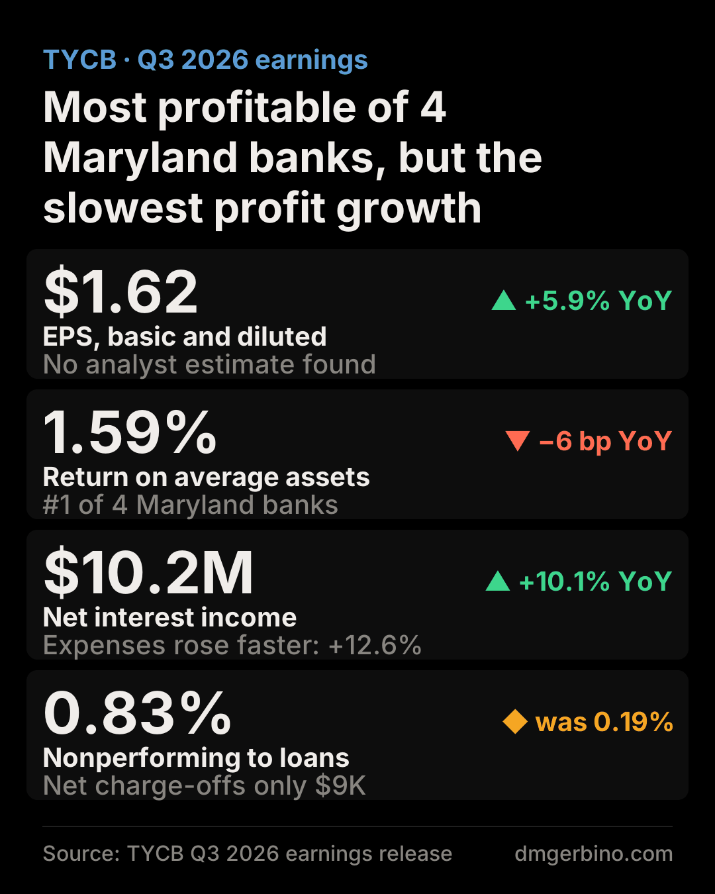

Downloads: Full video, no captions · 60-second cut, no captions · Captions (.srt) · 60-second captions (.srt) · Mobile graphic (PNG) · Mobile graphic (SVG) · Infographic (SVG)
Quarter ended Sep 30, 2026 (calendar Q3). Released Nov 17, 2026, 4:15 p.m. ET via ACCESS Newswire. All figures GAAP; the company reports no adjusted EPS. Basic and diluted EPS are the same.
No consensus estimate was found. Calvin B. Taylor trades on OTCQX and no analyst publishes estimates for it; the estimate pages searched list the stock without a current Q3 2026 figure. The company gives no guidance, so the actual-versus-estimate chart is skipped. Against its own past, EPS of $1.62 is up 5.9% from $1.53 and 15.7% from Q2's $1.40.
Net interest income rose 10.1% from a year ago on 8.3% higher average loans and a loan yield up 17 bp. Against Q2 it rose 6.8% as seasonal deposits were parked at other banks earning more after the Federal Reserve's late-September rate rise. The margin slipped 6 bp from Q2 to 3.99% as those lower-yielding balances grew. Q4 2025 and Q1 2026 come from the company's earlier releases.
Against three Maryland banks that reported the same calendar quarter, Calvin B. Taylor ranks first on return on assets, efficiency, margin and leverage, and last on net income growth. Its earnings base was already high: the peers are growing from lower returns, and Glen Burnie's +64% is on very small earnings.
* computed: Glen Burnie gives no ROA, so 0.21% is annualized Q3 net income over average assets. † FMFG reports net yield on earning assets rather than a labeled margin. Leverage is holding company for SHBI, bank for GLBZ, not stated for FMFG. NCO is annualized net charge-offs to average loans; n/d = not disclosed.
Calvin B. Taylor gives no numeric guidance and there is no consensus, so the guidance chart is skipped. Chief executive M. Dean Lewis said management remains focused on "disciplined growth, operating efficiency, and creating long-term value."
Net income rose $0.11M from a year ago. Net interest income added $0.94M and a lower provision added $0.20M, but higher expenses took $0.59M, lower fee income $0.33M and taxes $0.10M.
Higher interest income was mostly spent on higher costs
Leverage of 13.10% sits well above the 9% community bank leverage ratio threshold
The 9% threshold is the regulatory minimum for banks using the community bank leverage ratio framework, not a target. The release says the company and bank are well capitalized and above that threshold.
The company reports GAAP only, so there is nothing to reconcile. One-time items: Q3 2025 had $243K of gains on selling bank stocks; Q2 2026 had $239K; Q3 2026 had none. Year to date, noninterest income fell 38.3%, but the first nine months of 2025 included a $1.95M gain on a land sale; without it, noninterest income rose 18.6% (computed).
All figures are GAAP as printed in the company's releases (the company reports no adjusted measures), in US dollars. Q3 2025, Q2 2026 and Q3 2026 come from the Q3 2026 release; Q4 2025 and Q1 2026 come from the earlier quarterly releases, read from secondary copies. Growth rates, the net income bridge and peer gaps were recomputed from the dollar amounts; the recomputed efficiency ratio differs slightly from the company's (47.8% either way, rounded), so the company's figure is shown. No analyst consensus was found for this OTCQX stock, so there is no beat or miss. Peers are three Maryland bank holding companies of comparable business mix that reported Q3 2026 (July to September 2026): Shore Bancshares (largest Eastern Shore competitor), Farmers and Merchants Bancshares and Glen Burnie Bancorp; some Farmers and Merchants figures come from a summary and Glen Burnie's return on assets was computed from its release. Leverage ratios mix holding-company and bank-level measures, marked in the peer table. The share card's price line uses unadjusted over-the-counter trades from stockanalysis.com with the last trade carried forward on days without one, because the stock trades thinly and Yahoo Finance could not be read. Data was read on Nov 17, 2026.
Not investment advice.